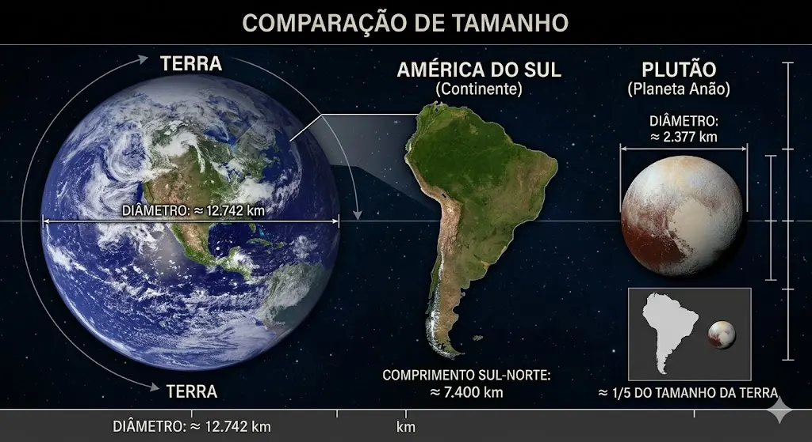
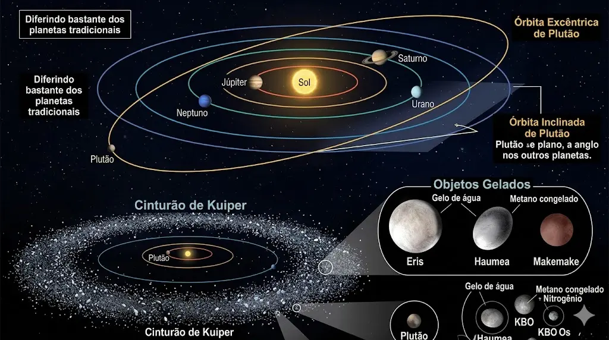

🪐 Plutão: O Mundo Anão e Distante
Plutão é classificado como um planeta anão e está localizado na região mais externa do sistema solar. Suas temperaturas são extremamente baixas, e sua superfície é composta por gelo e rochas.
Apesar de pequeno, Plutão apresenta uma diversidade surpreendente de formações geológicas, incluindo planícies e montanhas geladas.
Pequeno, mas complexo
Observações recentes revelaram que Plutão possui uma superfície mais dinâmica do que se imaginava, desafiando sua classificação simplificada.

🌌 Estrutura e Significado
Plutão possui uma órbita excêntrica e inclinada, diferindo bastante dos planetas tradicionais. Ele faz parte do Cinturão de Kuiper, uma região repleta de objetos gelados.
Sua reclassificação como planeta anão marcou uma mudança importante na forma como entendemos o sistema solar.
Uma nova perspectiva
Plutão representa a complexidade e diversidade dos corpos celestes, indo além das definições tradicionais de planeta.
